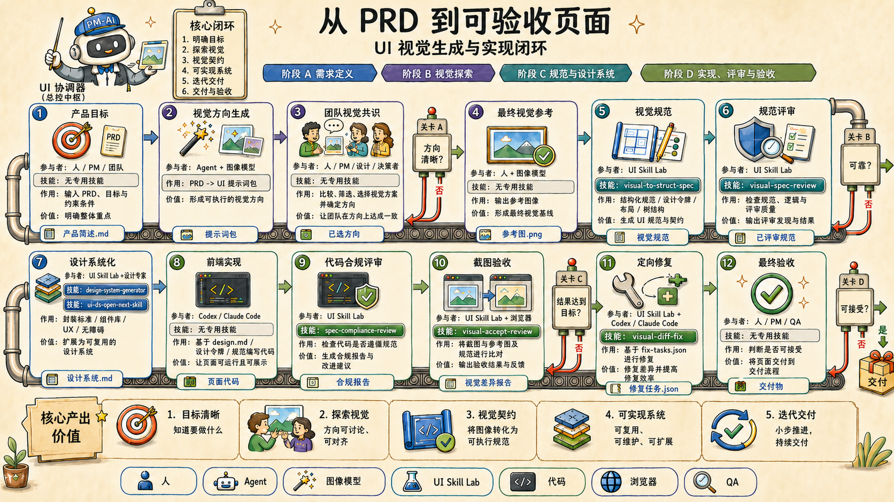
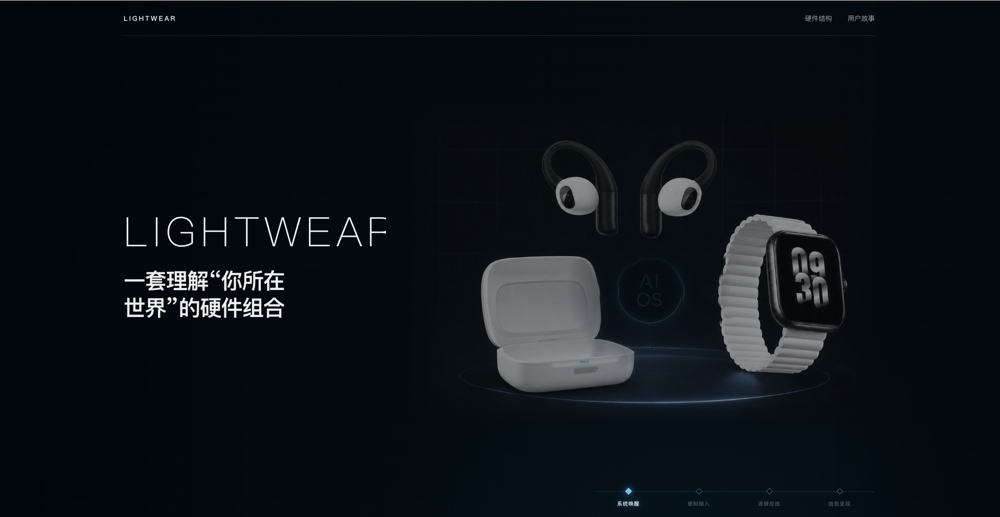
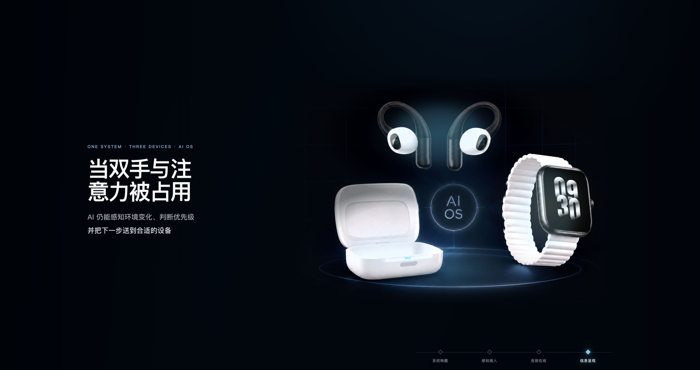

TwitCanva
Multimodal AI Creation Workspace
AI Product Manager · Build Portfolio
我如何用 AI 改变产品从概念验证、真实构建，到 Skill / Workflow 产品化的工作方式。
Multimodal AI Creation Workspace
Product Thinking Skill
Visual-first Agent Workflow
AI Product Concept Validation
Selected AI Product Work
每个项目只证明一件最重要的事：我能把模糊问题变成产品判断，再把判断推进成真实证据。
把素材、图像生成、视频生成、多模型能力与结果继续编辑组织在同一条可组合流程中，而不是让用户在不同工具之间反复搬运。
把原本依赖 Prompt 猜测的空间视角，转成可直接操作的 Camera 控制，让空间意图从语言描述变成明确产品交互。
在高成本生成之前加入可修改、可确认的规划层，平衡自动化效率、用户控制权与真实调用成本。
用自然语言 + 3D 可编辑结构，把复杂动作、构图与空间关系从“文字描述”升级为“可视化控制”。
“每天利用真实 AI 世界正在发生的变化，完成一次高阶产品判断力训练。”
让 AI 扮演高阶产品判断者，帮助理解一条信息背后的问题、因果、系统变化、价值流向和机会判断。
再把“高手是怎么一步步形成判断的”产品化成一套可以持续稳定运行的 Product Thinking Skill。
定时自动启动与全局全流程链路调度
负责“练什么、怎么想、怎么判断、怎么表达、怎么沉淀”
独立 Reviewer + Quality Rubric 严格拦截不合格内容
自动生成网页并推送微信，每天点击完成训练
系统构成与全链路闭环：Hermes Agent 作为底层调度执行引擎；而 Product Thinking Skill（思考内核）+ Quality System（质量治理）+ HTML Reader & 微信推送（交付媒介）共同构成交付给用户的每日认知训练产品。
知道发生了什么，不等于理解为什么发生。传统资讯停留在“事实罗列”，而高阶产品经理真正稀缺的是从事件中穿透出：因果逻辑、核心矛盾、系统关系、趋势变化与价值流向。
AI 很容易写出一篇“看起来很深”的分析，但形式完整不等于结论可靠：
怎么让 AI 不只是写得像高手，而是真的按照高手的方式一步步形成判断？
穿透表面 PR 公关修辞与事件表象，锁定最核心的真实动因。
解构供需关系、技术代差、上下游生态依赖与系统性约束。
推演产业链上下游博弈格局，精准判断利润转移与价值流向。
将宏观洞察转化为可落地、可证伪的产品策略假设与验证闭环。
晨间 Cron 定时唤醒任务，全天候无人值守自主运转。
Cron @ 07:00实例化执行智能体，初始化推理会话与上下文工作区。
Agent Initialized注入高阶产品经理思考框架、8Q 推理规范与质量标准。
SOP Loaded检索当天值得关注的全球 AI 与产品重大异动。
全网异动雷达扫描筛选最具产品思考训练价值与认知增量的 Case。
高阶认知价值过滤事实严格核验，区分事实（Fact）与推断（Inference）。
Fact vs Inference 分级按高阶 PM 思考路径穿透系统因果、机制约束与价值转移。
穿透因果与价值流向输出明确的产品策略判断、行动建议与可证伪假设。
明确行动建议与取舍“引入与生成解耦的独立 Reviewer，按照严格的多维 Quality Rubric 进行逻辑深度、因果严密性与事实证据把关。”
自动编译生成适合深度阅读的纯净 Daily HTML Reader。
Daily HTML Reader静态资产部署上线，生成全局可直接访问的独立网页。
云端静态站点部署将当天 Reader 链接与核心要点精准推送到微信端。
微信即时推送触达用户晨间打开微信链接，完成一次高阶产品思维训练与内化。
每日产品判断力沉淀把“高手面对一条信息时怎么形成判断”，拆成 8 个连续问题。每一步先明确为什么问，再根据当前不确定性动态选择分析方法，形成阶段判断，并把结果传递给下一步。
8Q 定义“必须想清楚什么”，Method 根据当前 Case 动态选择，不做固定框架绑定。
如果没有先确认真正承担成本、获得收益或拥有决策权的人，后面的场景、损失和机会都可能围绕错误对象展开。
区分 使用者、决策者、执行者、受益者和阻碍者，判断谁才是真正的价值主体。
明确谁真正被这次变化影响，以及谁承担主要成本、获得主要收益。
锁定主体之后，进入 SCENARIO：只分析这个主体在真实业务或生活情境中的变化。
同一个技术或产品能力，在不同场景里的价值可能完全不同。脱离真实场景讨论，很容易停留在“功能好不好”的表层。
还原事件发生前后：触发条件 → 用户任务 → 时间 / 空间 → 流程约束 → 环境限制。
找到真正高频、高痛或高价值的关键场景，而不是讨论一个抽象的“用户需求”。
场景确定以后，进入 LOSS：这个场景里，用户到底付出了什么真实成本？
没有真实损失，就很难形成强需求。“感觉不好用”不是一个足够清晰的产品问题。
把损失继续拆成：时间 / 金钱 / 认知负担 / 错误风险 / 机会成本 / 控制权损失。
明确当前最值得解决的核心损失，以及这个损失为什么足够重要。
明确 Loss 后进入 GAIN：用户真正希望得到的改善是什么，而不是立刻开始列功能。
功能只是手段。必须继续追问：用户最终到底希望自己的状态发生什么变化？
区分 Feature Request 与真正的 Outcome / Gain（例如：更快、更准、更省、更稳定、更可控、更有确定性）。
形成清晰的目标收益和价值命题，而不是一张功能 Wishlist。
进入 CAUSALITY：既然这个收益有价值，为什么用户今天仍然得不到？
如果只解决表面症状，产品很容易不断增加功能，却没有真正改变结果。
沿着 现象 → 约束 → 机制 → 根因 持续追问。
形成一个可以被验证或推翻的根因假设，而不是把相关性直接当成因果。
进入 SYSTEM：检查这个问题是不是由多个角色、激励和约束共同造成，而不是单一原因。
复杂产品问题通常不是一个点坏了，而是多个参与者、利益关系和约束共同作用的结果。
识别 用户 / 平台 / 供应方 / 渠道 / 技术 / 组织 / 商业利益 / 监管 之间的关系、反馈和制约。
找到真正的控制点、反馈回路和系统瓶颈。
进入 EVOLUTION：如果这些角色的能力、成本、激励发生变化，整个系统接下来会怎么演进？
今天成立的产品判断，不一定明天还成立。真正的趋势判断必须解释“什么变化会让系统改变”。
识别 关键变量、触发条件、领先信号、边界条件和失效条件。
形成 2–3 个可能的演进方向，并知道应该观察什么信号来判断哪一种正在发生。
最后进入 VALUE FLOW：如果这个变化继续发生，谁最终获得更多价值、利润和控制权？
只有知道价值最终流向哪里，才能真正判断产品机会、商业空间和长期护城河。
分析 谁创造价值？谁捕获价值？谁承担成本？谁掌握入口、数据、关系或分发？
形成最终产品判断：机会在哪里、谁会受益、哪个控制点最重要。
8Q 在这里结束，进入最终 DO / DON'T / VALIDATE：把洞察转成真正的产品取舍和下一步行动。
“分析方法只是回答问题的工具。核心准则是：如果拿掉某个分析方法并不改变最终 Insight，它就不应该出现在推演链中。”
围绕五个关键产品问题，我逐步完成这套判断能力的产品化：先定义用户真正需要的判断价值，再将专家认知显式化为 Skill，建立独立 Eval 与 Product Correctness，最终接入定时运行与微信分发链路。
用户真正需要的是更多内容，还是持续获得高质量判断？
将产品价值收敛到判断质量：以持续变化的 AI / 产品案例作为真实训练素材，帮助用户识别信息价值、形成判断并做出决策。
为什么一句“像高级 PM 一样分析”，仍然无法稳定复制高手判断？
将高手依赖经验完成的判断过程显式拆解为案例选择、问题识别、方法路由、推理分析与判断输出，并固化成可重复运行的 Product Thinking Skill。
一篇看起来很专业的分析，怎样判断它真的够好？
执行 Agent 负责使用 Skill 形成判断；独立评审 Agent 根据评分标准、证据与推理边界进行裁决，质量门禁决定结果是否进入交付。
Skill 已经通过评测，为什么最终交付仍然可能出错？
将验收继续推进到最终产品结果，分别检查结构、语义、呈现与用户最终内容，把真实内容验收纳入 Product PASS。
Skill 已经能稳定完成判断以后，怎样让价值每天自动发生？
将 Skill 接入完整交付链路：定时触发内容获取与分析，经 Skill 执行、AI Eval 和质量门禁后，将最终结果主动分发到微信。
从用户价值定义，到 Skill 设计、AI Eval、产品验收与持续交付，这个项目覆盖了一条完整的 AI 能力产品化链路。
从表层需求中重新定义真正需要解决的用户问题。
将专家隐性判断拆成 Agent 可重复执行的方法、规则与流程。
建立生成之外的独立质量裁决、证据与门禁机制。
将验收从 Skill 输出推进到用户最终看到和收到的真实产品结果。
把 Skill 接入定时触发、质量控制与微信直推，形成持续交付闭环。
03 / PRODUCTIZE
· OPEN-SOURCE WORKFLOW让 AI 前端从「能生成」走向「可交付」
我独立设计并开源的一套 Visual-first AI Frontend Workflow：先建立可确认的视觉目标，再转化为 Agent 可执行的规格合同；最后通过真实浏览器验收与结构化修复，让 Codex / Claude Code 实现逐轮收敛。
npx skills add Jason904/ui-skill-lab --all
PRD 可以定义功能逻辑，却无法完整表达空间层级、布局、视觉风格与细节。产品、设计和 Agent 可能各自在脑中形成不同页面。
参考图对人直观，却没有显式定义 layout、tokens、component hierarchy、states 与 responsive rules，Agent 仍需自行补全。
编译和测试通过只能证明工程正确，无法证明真实浏览器结果符合视觉目标、文字截断和交互状态等产品要求。
UI Skill Lab 补上的，就是 Human Visual Intent 与 Agent Implementation 之间的 Control Layer。
让团队先确认目标形态，在编码前建立可对照的视觉真值。
把视觉目标转换为 Agent 必须服从的结构化设计约束：layout、tokens、components、states 与 rules。
用真实浏览器截图作为产品证据，而不是把 Build Pass 当成 Product Pass。
把视觉差异转成局部、结构化的 fix-tasks，限制修改范围，并在修复后重新验收。
UI Skill Lab 在 Human Visual Intent 与 Agent Implementation 之间建立一层 Control Layer。
用 Target、Contract、Gate、Feedback 把实现过程变成可约束、可验收、可修复的闭环。
只有文字需求
无视觉合同，Agent 自行补全结构与样式
代码能运行，但没有产品级视觉校验
“感觉不太对”
根据自然语言局部重调 CSS / Layout
定义产品目标、页面任务与核心需求，作为系统原始输入。
将文字需求转成团队 / 人可确认、可比较的目标画面，建立后续实现的视觉基准。
把 Reference 中看得见的结构转成可执行规格。layout / tokens / hierarchy
补齐静态 Reference 中看不见但产品必须有的规则。states / responsive / reusable rules
Codex / Claude Code 按 Visual Spec 与 Design System 实现前端，而不是自行补全页面结构与视觉规则。
用真实浏览器多视口渲染结果作为产品验收证据，检查页面是否真正符合 Visual Target 与 Contract。
把视觉差异转成结构化 fix-tasks.json，限制修改范围，并在修复后回到 06 Browser Acceptance 重新验收。

阻止错误视觉方向进入规格化与开发。
阻止错误、缺失或未经确认的规格进入实现。
阻止偏离 Visual Contract 与 Design Rules 的实现进入产品验收。
阻止真实浏览器结果不符合目标的页面进入最终交付。
围绕 Target、Contract、Acceptance 与 Repair 拆出的职责隔离 Skill，每个节点都有明确输入、产物与上下游边界。
image2-prompt-pack
ui/01_prompt_pack/
visual-to-struct-spec
ui/03_visual_spec/
visual-spec-review
ui/04_visual_spec_review/
design-system-generator
ui/05_design_system/
spec-compliance-review
ui/06_spec_review/
visual-acceptance-review
ui/07_validation/
visual-diff-fix
ui/08_diff_fix/
从问题抽象、Agent Contract、产品验收到 Workflow 架构与开源产品化，UI Skill Lab 覆盖了一条完整的 AI 产品设计与落地链路。
从真实 AI Coding 中反复出现的目标漂移、规格缺失和验收失真出发，将问题收敛为 Target、Contract、Evaluation 三个关键缺口，并据此定义 Control Layer 的产品边界。
将 layout、tokens、component hierarchy、states、responsive rules 等视觉约束结构化，形成 Visual Spec 与 Design Rules，明确 Agent 在实现阶段需要遵循的规则与边界。
将代码合规、真实浏览器渲染与视觉差异评估串成完整验收链路，建立 Spec Compliance、Browser Acceptance 与 Visual Benchmark，让交付结果可以被检查、比较和持续回归。
将视觉目标、规格治理、实现验收与定向修复拆成 7 个 Core Skills，并定义上下游 Artifact、Control Point 与 Re-check Loop，使整套流程可以复用、组合和持续扩展。
将完整 Workflow 整理为可安装、可迁移、带文档与测试的 Open-source Skill Workflow，并通过真实的 GitHub Star 与 Fork 获得外部开发者反馈。
04 / VALIDATE · AI PRODUCT CONCEPT
如果一个产品还不存在，怎么让组织提前看见它？
在高成本 Build 之前，先用 AI 做低成本 Experience Simulation，让团队在研发投入前即可更直观地判断产品方向、体验方案与可行性，支持早期验证与决策沟通。
把模型、算法、硬件等抽象技术能力，重新组织成用户能够直接理解和感知的产品体验，而不是停留在 Feature List。
把产品能力放进具体人物、场景和任务里，用 Experience Story 验证：用户为什么需要它、什么时候真正有价值。
用视觉稿、Storyboard、Video 和 Interactive Prototype，把不同角色脑中的“产品想象”变成同一个可见对象，推动跨团队对齐、MVP 取舍和下一步投入决策。
把抽象产品概念快速变成可见的产品形态、场景和体验故事。
把静态表达进一步做成可浏览、可交互、可快速迭代的产品概念体验。
LIGHTWEAR AI WEARABLE · 0-TO-1 CONCEPT PROTOTYPE


FOUR-STAGE CONCEPT VALIDATION & DECISION PIPELINE
把技术输入转成清晰的产品价值、用户问题和 Experience Proposition。
把抽象概念转成产品形态、用户场景、Storyboard 和动态体验。
把静态概念做成可浏览、可交互、可迭代的线上产品体验。
让产品、算法、硬件、设计和决策者围绕同一个产品对象讨论，而不是围绕各自脑中的想象讨论。
AI PRODUCT BUILD PORTFOLIO